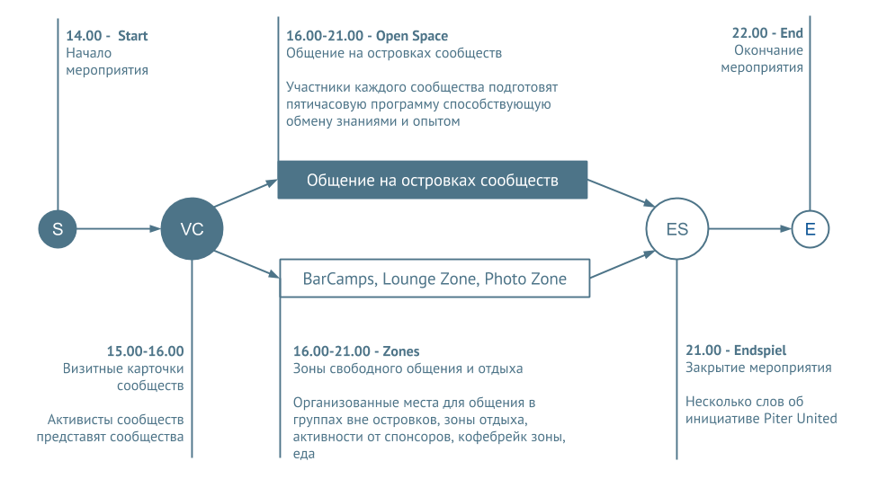

Piter United
Объединение IT сообществ Санкт-Петербурга, нацеленное на формирование и развитие профессионально-образовательной инфраструктуры на базе сообществ.
С 2013 года ежеквартально проводит встречи IT Global Meetups, на которых собираются участники всех IT сообществ Санкт-Петербурга, знакомятся, обмениваются профессиональным опытом, развиваются и развивают!
С 2013 года ежеквартально проводит встречи IT Global Meetups, на которых собираются участники всех IT сообществ Санкт-Петербурга, знакомятся, обмениваются профессиональным опытом, развиваются и развивают!
Мы рады пригласить вас на весенний
IT Global Meetup
30 мая 2014 года в Санкт-Петербурге
IT Global Meetup
30 мая 2014 года в Санкт-Петербурге
Программа
Участие в мероприятии
Активное участие
- зарегистрироваться
- присоединиться к сообществу
- поучаствовать в формировании программы вашего сообщества
- прийти на встречу


Просто участие
- зарегистрироваться
- прийти на встречу
Регистрация БЕСПЛАТНАЯ, участие ОБЯЗАТЕЛЬНОЕ!!!
Регистрация и место проведения
Музей связи, ул. Почтамтская 15
30 мая с 14.00 до 22.00
Партнеры и спонсоры
... логотипы и названия ...